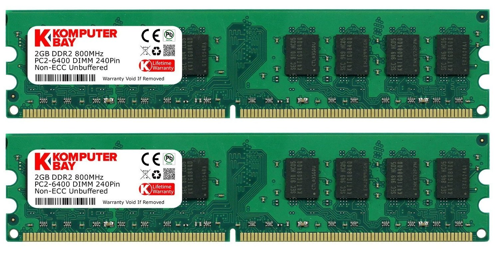
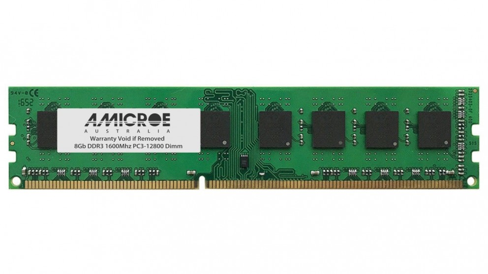
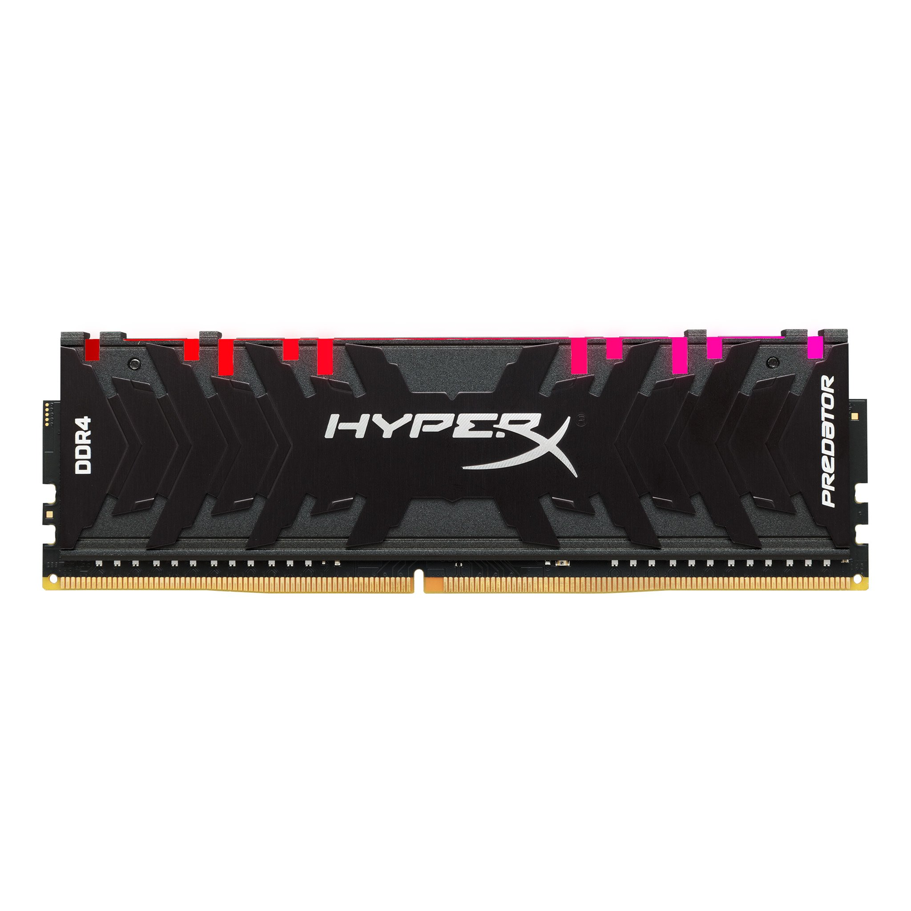

La RAM se utiliza como memoria de trabajo de computadoras y otros dispositivos para el sistema operativo, los programas y la mayor parte del software.
En la RAM se cargan todas las instrucciones que ejecuta la unidad central de procesamiento (procesador) y otras unidades del computador, además de contener los datos que manipulan los distintos programas. Aquí veremos los diferentes tipos de memoria Ram que existen
| DDR 2 |
DDR 3 |
DDR 4 |
|  |
 |
 |